Create Result Using Expression
VCollab Pro users can create a new CAE result from existing results in two ways- using expressions and using coordinate systems.
For creating results Using Expression, users have to provide a formula with specific notations, supported operators and functions. New results will have the same number of instances as other results have.
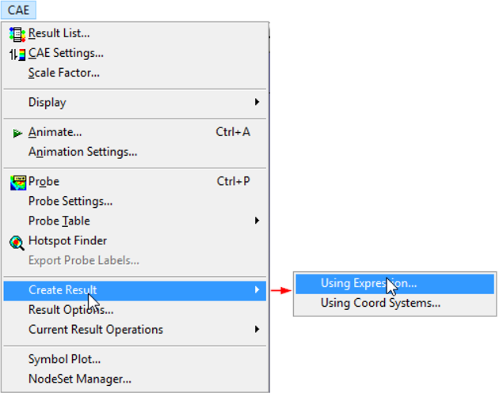
A new CAE result can be created for
- Combining results
- Average of two or more results
- Difference between the two results
- Summation of two derived results
- Scaling result, etc.
The computed new result will be updated to CAE | Result List immediately and users can view the new result in the same way as other results.
Note: Complex results are not supported.
Create Result Panel
The Create Result panel opens on clicking CAE Settings| Create Result | Using Expression
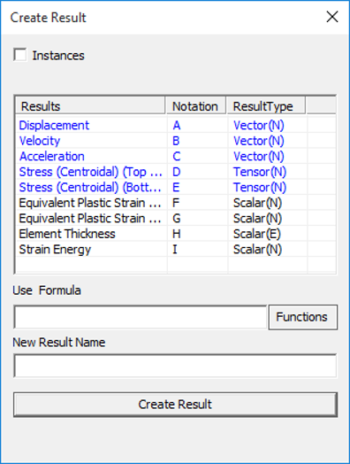
The various fields in the Create Result Panel are explained below.
| Instances | Enables Instance Creation. |
| Results | Displays the name of existing Results. |
| Notations | Displays the corresponding notations. An alphabetic notation which refers to the result in the first column is used. Every result has its own unique alphabet notation. |
| Result Type | Displays result type of the corresponding results. The type of results can either be a Scalar or Vector or Tensor. An acronym in the bracket specifies if the result is of nodal(N), elemental(E) or element nodal type(EN) |
| Use Formula | Enter the formula to be used in the form of an expression with arithmetic operators, notations and constants. |
| Functions | Drops down a list of functions that can be used in the formula text box. |
| New Result Name | Specify a name for new result that will be created |
| Create Result | Evaluates the expression in the formula bar and creates the new result. A success or error message will be displayed depending upon the outcome. |
Once a result is created, a success message "New result is created and added successfully" is displayed. The new result will be added to the Current CAE model and will contain the same number of instances as the other results.
The new result name will be added to the CAE | Result List panel as well as the current panel.
Notation for a derived component of a Vector or Tensor result
- Select a Vector / SixDOF / Tensor result.
- Right click to open a context menu which lists a set of derived result names based on the result type of selected CAE result.
- Select a result.
- The derived result name selected by the user will be added at the end of the result list temporarily for computation. This result name is of the form, "Result Name - Derived result name" (Eg. Displacement-Translational Magnitude).
- Temporary Notation and result type will be generated and will be used for current expression.
- All the temporary derived result names will be cleared if the dialog is refreshed.
Context Menu for Six Degrees of Freedom Result

Context Menu for Vector
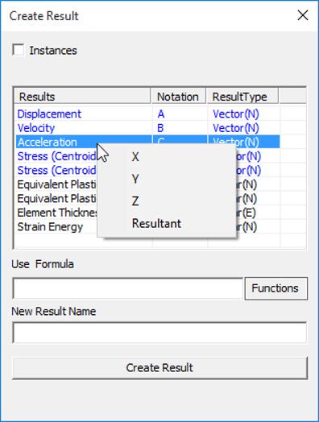
Context Menu for Tensor
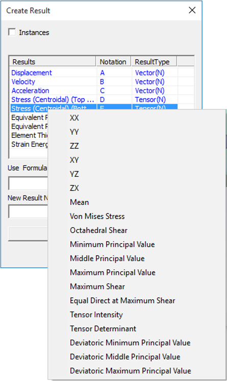
Basic Operators
| Operator | Description | Syntax |
|---|---|---|
| "+" | Addition between A & B | A+B |
| "-" | Subtraction between A & B | A-B |
| * | Multiplication between A & B | A*B |
| / | Division between A & B | A/B |
| ^ | A to the power of B | A^B |
| % | Modulus of A with respect to B | A%B |
Inequalities
| Inequality | Description | Syntax |
|---|---|---|
| < | Less than | A < B |
| > | Greater than | A > B |
| <= | Less than or equal to | A <= B |
| >= | Greater than or equal to | A >= B |
| == | Equal to | A == B |
Note: Any inequality will result in either 0 (false) or 1 (true).
Functions
| Function | Description | Syntax |
|---|---|---|
| abs | Absolute value of a variable | abs(A), abs(A+B) |
| avg | Average of variables | avg(A,B,C...,H) |
| min | Minimum of values | min(A,B,C) |
| max | Maximum of values | max(A,B,C) |
| sqrt | Square root of a value | sqrt(A) |
| sum | Sum of values | sum(A,B,C) |
| sin | sine of A (in radians) | sin(A) |
| cos | cosine of A | cos(B) |
| tan | tangent of A | tan(A) |
| asin | arc sine of A | asin(A) |
| acos | arc cosine of A | acos(A) |
| atan | arc tangent of A | atan(A) |
| atan2 | arc tan of (A/B) | atan2(A,B) |
Operands
Create Result panel lists a set of notations for all CAE results. These notations can be used in the formula bar. Notations will be in capital letters for result creation and in small letters for result instance creation. Other than these notations, users can use any real value constants.
Sample Expressions
| S.No. | Sample Expressions |
|---|---|
| 1. | A+B |
| 2. | A*B |
| 3. | A-B |
| 4. | A/B |
| 5. | Sin(B) |
| 6. | 3*A or A*3 |
| 7. | A+((-B*C)/(2*D))*cos(B) |
| 8. | -A |
| 9. | A * (-B) |
| 10. | abs(A+B) |
| 11. | sqrt(A) |
| 12 | A^2 |
Steps to create a new result using expression
- Click CAE | Create Result… to open the Create Result panel.
- Enter a valid expression.
- Click on Functions to insert a supported function.
- Enter a name for the new result.
- Click Create Result.
- Wait for the message "Successfully created and added". An error message will be shown if there is an invalid expression.
- Computed result will be added to 'CAE | Result List ' panel which can be opened by clicking CAE | Result List..
- To interpret the new results, click on the new name appended to the result list
Note:
- Avoid division operator '/', as it leads to undefined results. VCollab Pro identifies undefined results and sets No Result value to those nodes.
- For any node/element, if any one component of a Vector or Tensor result has No Result as value, the same value will be set to all the components of the new result.
Different cases of Result Creation
- Creating a new CAE results in a single model.
- Creating a new Instance.
- Creating a new CAE result across merging models.
Case 1: Steps to Create a new CAE result in a single model.
Load a CAX model, which contains CAE data.
Click CAE | Create Result
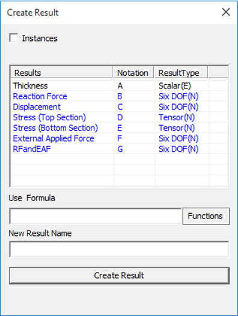
- Enter the expression or formula in the Use Formula text box. The expression should be valid with correct notations, operators and constants. For example - "A+B/E".
- Enter a name for the new result.
- Click Create Result.
- A message box will be shown either for successful creation or with error information
Case 2: Creating a new CAE instance in a single model.
Load a CAX model, which contains CAE data.
Click CAE | Create Result
Check Instances option. This enables the All Results option
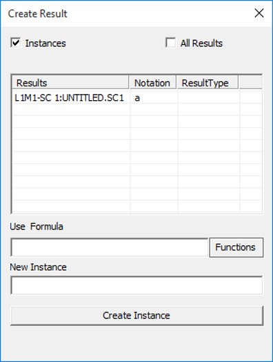
Users can create a new instance to the currently selected CAE result or all results. This can be controlled by the option All Results
Enter the expression or formula in the Use Formula text box. The expression should be valid with correct notations, operators and constants. For example - "A+B/E".
Enter a name for the new result.
Click Create Result.
A message box will be shown either for successful creation or with error information
Case 3: Creating a new CAE result across merged models.
Load a CAX model, which contains CAE data.
Merge one or more CAX files or models.
Click CAE | Create Result
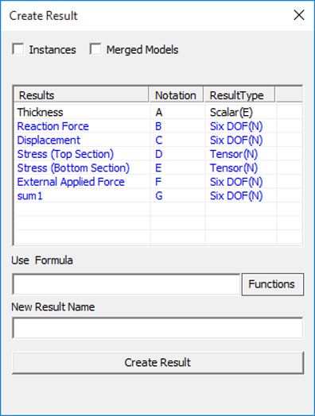
Check the option Merged Models, which opens a drop box list of merged files.
Notations change accordingly with an extension of model number. 'A1' refers to the first result of model 1 and 'B2' refers to the second result of model 2.
Users can create a new instance to the currently selected CAE result or all results. This can be controlled by the option All Results
Enter the expression or formula in the Use Formula text box. The expression should be valid with correct notations, operators and constants. For example: - "A+B/E".
Enter a name for the new result.
Click Create Result.
A message box will be shown either for successful creation or with error information
Examples
The following images describe the addition of two results. Notice the contours of,
Result one: Reaction Force.
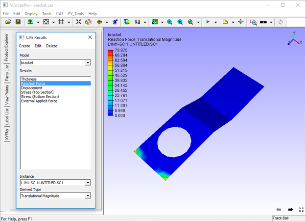Result two: External Applied Force
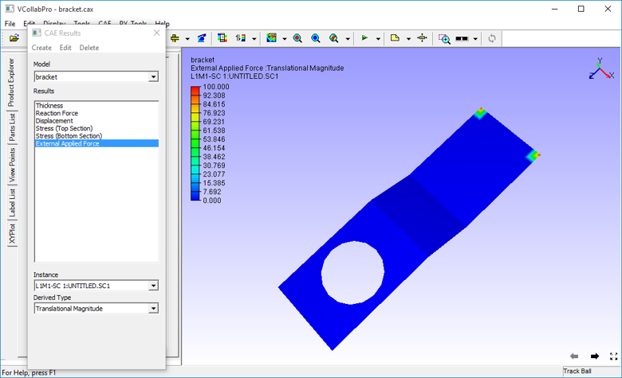New Result :CombineReactionNExternalForce
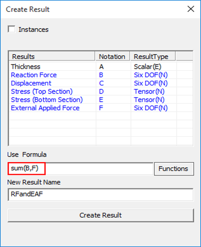
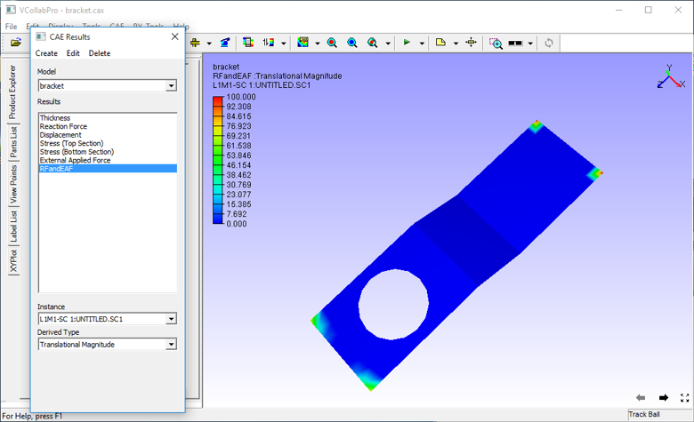